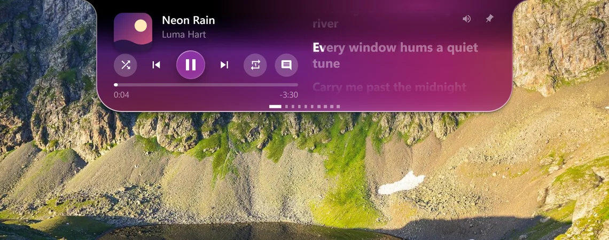
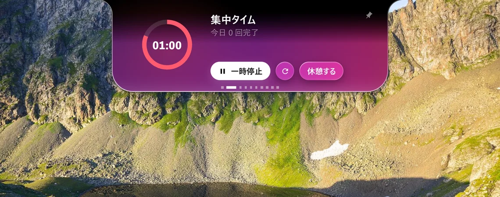
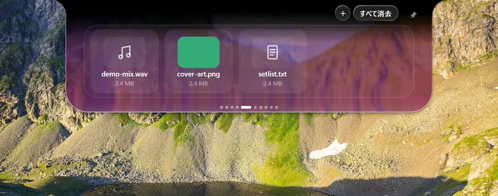
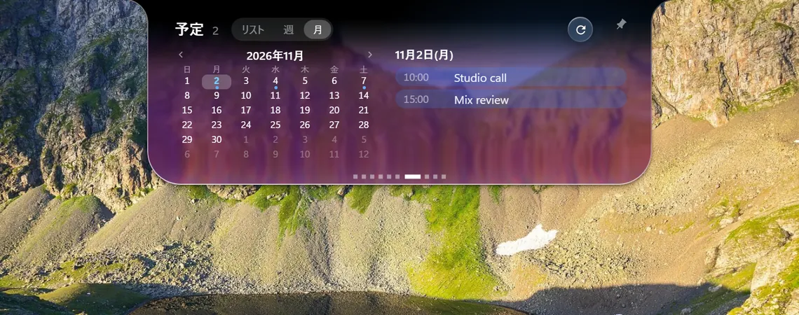
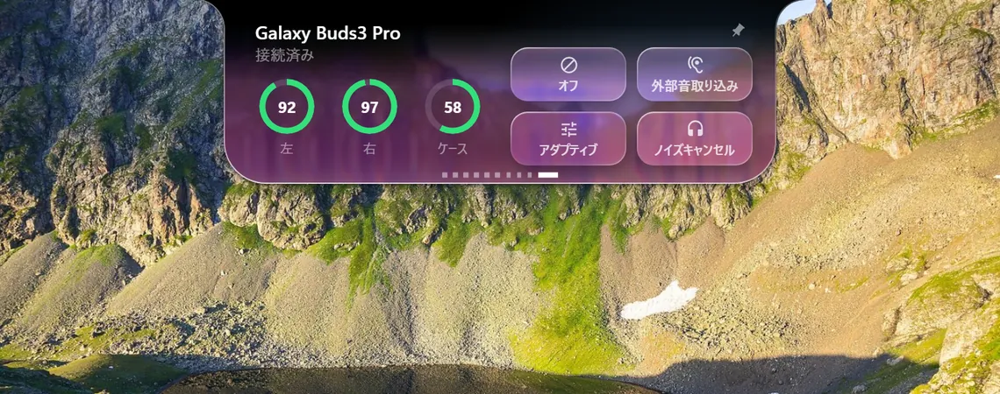
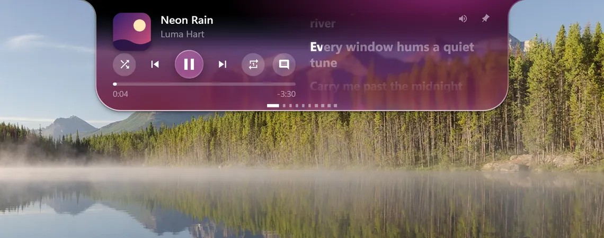
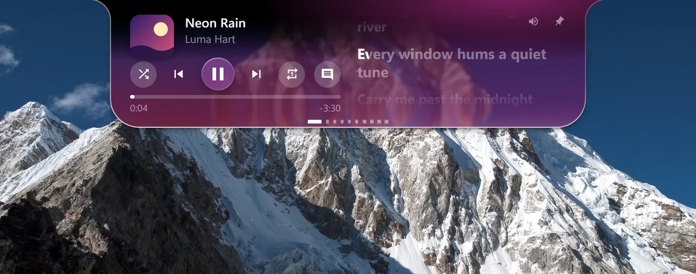
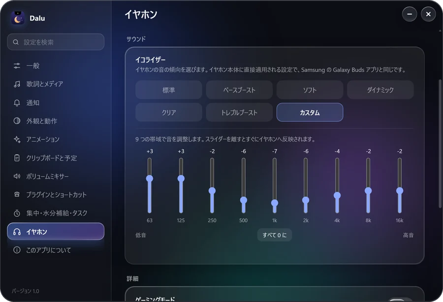
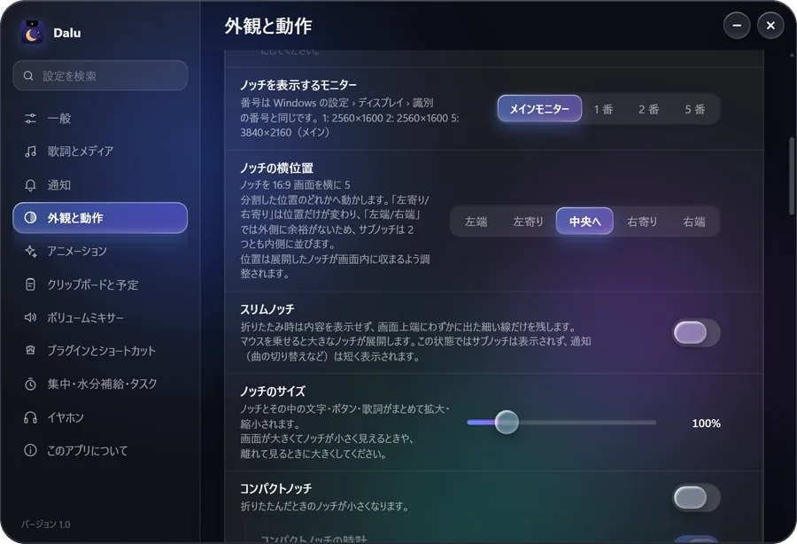

声に寄り添う歌詞。
Streetlights bloom along the river.
Every window hums a quiet tune.
Carry me past the midnight bridges.
タイミング情報のある曲なら、単語のひとつひとつまで。

一語ずつ、ぴったりと。
タイミング情報のある曲は、歌うそばから単語が光ります。

ひとつに集中。
ポモドーロ、タイマーとストップウォッチのラップ、水分、やること。すべてノッチの中に。

置いて、持ち出す。
ノッチにファイルを置いて、好きなウィンドウへドラッグ。

今日を、ひと目で。
カレンダーのアドレス（.ics）を貼って、リスト・週・月で表示。

ひとタップで静かに。
何も開かずに、Galaxy Buds のノイズコントロールを切り替え。
ただの黒か、リキッドグラスか。
スクロールすると、2つの見た目を行き来します。


背後の世界を曲げるガラス。
壁紙を選んでください。ノッチが背後の景色を屈折させます。




ドットに乗せると、タブが現れる。
小さなドットに乗せると、タブのアイコンに変わります。それぞれのアイコンの役割はこちら。
タブのアイコン
- 音楽曲、再生、歌詞
- 集中ポモドーロ
- タイマータイマー、ストップウォッチ、ラップ
- 水分水を飲む時間のお知らせ
- ファイル棚ファイルをちょっと置く
- やること時刻を決めて通知
- 予定リスト・週・月
- ショートカットよく使うアプリとフォルダー
- プラグインほかのアプリを操作
- イヤホンバッテリーとノイズコントロール
隅のアイコン
- 音量音量とミュート
- 固定押すとノッチが閉じません
好きな場所に。
画面の上端を 5 つに分けて、ノッチを動かせます。いちばん端では、サブノッチが内側に集まります。

閉じているときは細い線だけ。乗せると開きます。
DirectX・OpenGL・Vulkan のゲームが前面にあるあいだ、ノッチは隠れます。
9 バンド、自分だけの音。
イコライザーを整え（スライダーを動かすそばから聞こえます）、片耳だけでもノイズコントロールを保てます。
Buds3 Pro でのみ確認しています。

あなた流に。
100 以上の設定、4 つの言語、プラグインは JSON ファイル 1 つで。

- インストール
- 管理者権限は不要です。
- 確認
- ダウンロードページに SHA-256 を掲載しています。
- ライセンス
- ソース公開、非商用で利用可（PolyForm Noncommercial 1.0.0）。
コード署名がないため、初回は Windows SmartScreen が「不明なアプリ」と警告することがあります。「詳細情報」を押してから「実行」を押すとインストールできます。